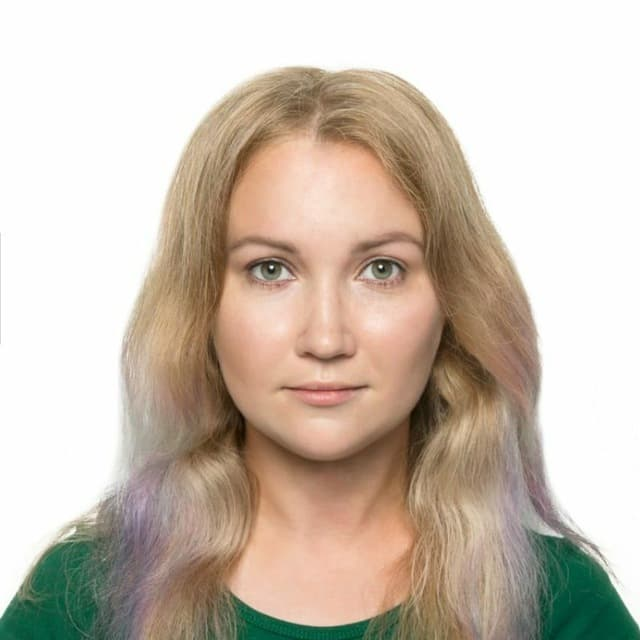

Задание №1
Марина Хадиева
- Возраст 32 год, SEO на фрилансе: один основной заказчик, один сторонний.
- Решила освоить фронтенд, потому что программировать мечтала со школы, но по разным причинам отказывалась от
этого пути развития. Фронтенд выбрала потому что он достаточно близок моей нынешней работе. Плюс в отличие
от бэкенда во фронте можно брать короткие небольшие заказы на фрилансе, с бэком это сложнее. Привлекает
возможность красивой визуализации решений, но как понимаю по началу надо научиться все делать в консоли.
- Моя главная слабость и возможно сила это увлечение всем подряд, я очень сильно распылаюсь и мне тяжело
сконцетрироваться. В случае с Великим Фронтенд Марафоном меня выбило из колеи спортивное событие и
переживания по поводу отношений. Не могу отключиться от эмоций, они могут вывести меня из рабочего настроя.
- Если что-то не получается, буду делать пока не получится. А если и тогда не получится, отдохну и вернусь к
этой задаче чуть позже. Так я считала в прошлый раз, боюсь это не всегда работает((
Когда будет сложно обращусь к:
- Николай Javascript (за техническими советами)
- Глеб Java (за энергией и желанием пахать)
- Четвертый (просто когда хреново)
- Народ в чатике(чтобы пофлудить и попросить помощи)
- У меня есть хорошее качество вjobывать когда нужно, оно поможет мне дойти до конца,
главное его включить.
- После учебы хотела бы работать Junior Frontend в зарубежной компании либо международной базирующейся в СНГ
- Обожаю решать задачи, брейнстормить и работать в команде
- Зп на первом рабочем месте: вопрос болезненный. Хотелось бы хотя бы 50к, на меньше смогу существовать,
только где-то еще подрабатывая. Планирую поискать работу на зарубеж с самого начала, там бы хотелось от
1000$. Но все чаще ловлю себя на мысли что готова и на 16к
- Мне кажется мой первый доход будет в разы меньше нынешнего и тогда я потрачу его на обычные повседневные
нужды. Порадую себя каким нибудь индивидуальным занятием с тренером, например схожу на бачату вечеринку,
скалолазание или
порисовать.
Мой план на 2-3 года:
- Выйти на Middle уровень
- Найти постоянного заказчика или компанию зарубежом
- Сдать английский на твердый B2 (Этот уровень у меня был или есть, надо только вспомнить)
- Стать уверенной в своих знаниях и том что я всегда с легкостью найду работу с нужным мне заработком
- Найти интересную для себя тему, вроде data science в медицине и развиваться в ней
- Создать хотя бы один собственный проект и попробовать его развить.
- Тусить с программистами, участвовать в различных мероприятиях.
- Изменит ли новая профессия мою жизнь? Моя жизнь меняется каждый день. Я не в первой меняю профессию и
поэтому уже "привыкшая". Как жила в кайф на фрилансе, так и продложу жить в кайф. Только надеюсь
возможностей станет больше, станет больше профессионального общения и я смогу наконец участвовать во всяких
программистких движах типа хакатонов.